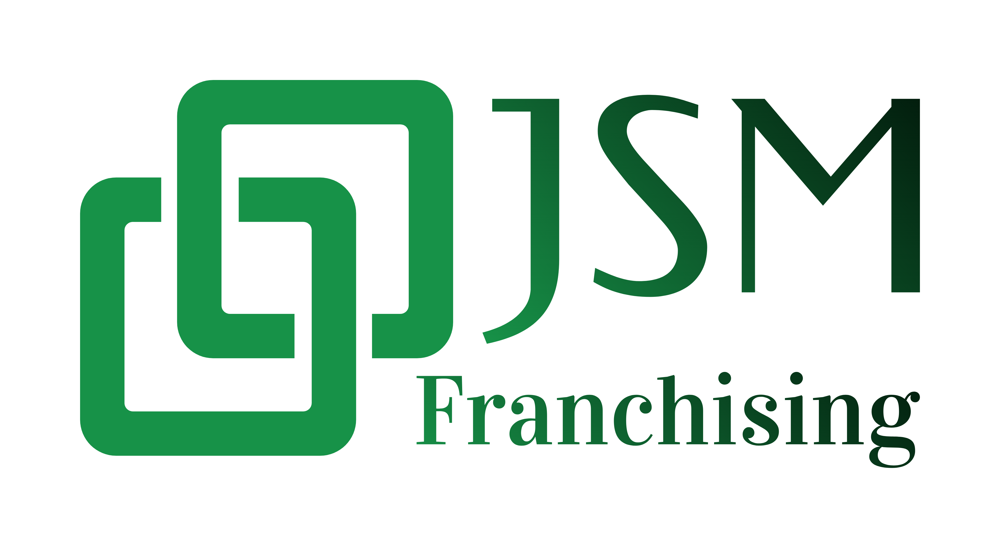

Home
Business Assessment
Funding Calculator
Search
Let's Talk
0 results found
Select Industry
Advertising
Automotive
Beauty & Spa
Business Management & Coaching
Business Services
Catering
Child Education
Child Services
Commercial Cleaning
Computer Technology
Dry Cleaning-Laundry
Electrical
Financial Services
Fitness
Food & Beverage
HVAC
Home Inspection
Home Services
IT Services
Lawn & Garden
Locksmith
Maintenance
Marketing
Moving & Storage
Painting
Pest Control
Pet Care & Grooming
Plumbing
Print, Copy & Mailing
Real Estate
Residential Cleaning
Restoration
Retail
Roofing
Security
Senior Care
Signs
Sports & Recreation
Staffing
Vending
Waste Management
Water Treatment
Window Cleaning
Wellness
Order By
Sort by Minimum Investment (Low to High)
Sort by Maximum Investment (High to Low)
Sort by Number of Outlets
Alphabetical (A-Z)
Explore
Clear all